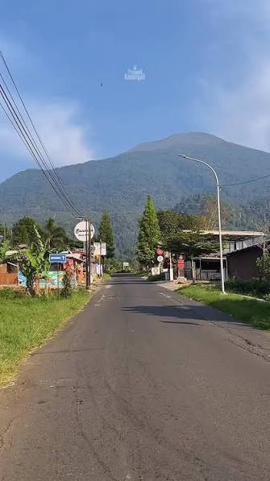

KerajinanAnyaman Lingga
Produk anyaman bambu dan rotan yang dibuat dengan detail khas desa serta cocok untuk oleh-oleh.
Halaman ini menampilkan berbagai UMKM desa dengan foto, bidang usaha, dan deskripsi singkat agar pengunjung mudah mengenalnya.
Lihat daftar UMKM

KerajinanProduk anyaman bambu dan rotan yang dibuat dengan detail khas desa serta cocok untuk oleh-oleh.
Makanan
Menawarkan kopi lokal, jajanan tradisional, dan minuman hangat yang cocok untuk santai bersama.
 Pertanian
Pertanian
Hasil pertanian lokal seperti sayur, buah, dan rempah yang dijual langsung dari petani desa.
Struktur halaman ini bisa dikembangkan lebih lanjut dengan fitur detail produk, harga, kontak pemilik, dan galeri foto yang lebih lengkap.
“Setiap UMKM kecil punya potensi besar untuk memperkuat ekonomi desa.”